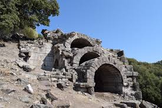
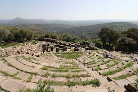

Aigai, Manisa ili, merkez ilçeye bağlı Köseler Köyü’nün 2 km güneyindeki Gün Dağı’nın üzerinde, kısmen ayaktaki harabelerden ibaret bir antik kenttir. MÖ 1100 yıllarından sonra Yunanistan’dan gelip kuzeybatı Anadolu kıyılarına yerleşen Aioller tarafından kurulan 12 kent arasında sayılmaktadır.
Günümüzde İzmir Körfezi ile Çandarlı Körfezi arasında yer alan ve antik dönemde Aiolis olarak adlandırılan bölgeye yerleşen ve kentler kuran Aioller, İzmir Körfezi’nin güneyine yerleşen İonlar'ın aksine iç kısımlarda da (Aigai ve Temnos gibi) kentler kurarak ticaretten çok tarım ve hayvancılığa önem vermişlerdir.
Aigai ile ilgili ilk bilgileri tarihçi Herodotos’tan almaktayız. Herodotos (MÖ 5. yüzyıl) Aigai Kenti'ni Aiollerin kurduğu 12 kent arasında sayar. Gerçekten de, özellikle akropolisi çeviren teras duvarlarında kullanılan teknik kentin daha MÖ 6. yüzyıldan itibaren güçlü surlarla çevrili olduğunu göstermektedir. Bununla birlikte, kentin gerçek kuruluş tarihi tam olarak bilinmemektedir


 "Manisa"ya dönmek için basın
"Manisa"ya dönmek için basın